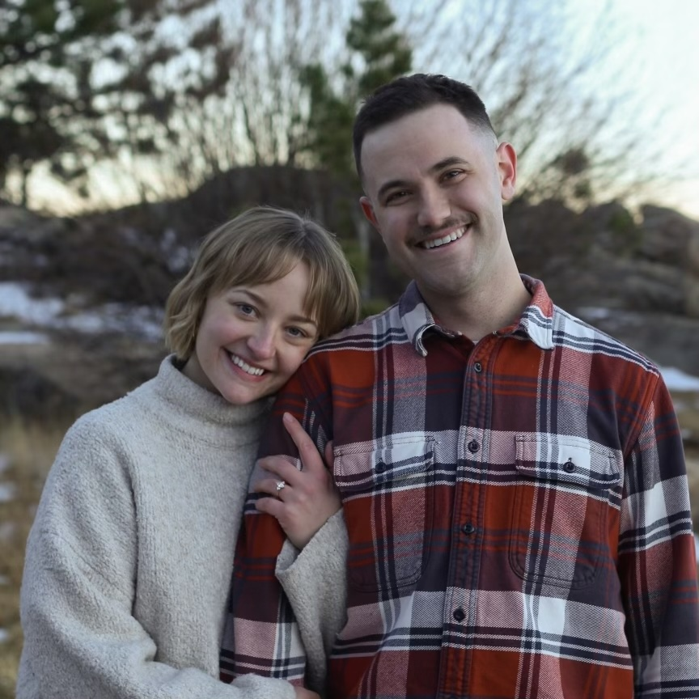

Welcome to our Wedding!
Details
- Where: Sunrise Ampitheater,
Boulder, CO
- When: 09/30/2024, 10:30am
- Who: Amber, Patrick, and hopefully you!
- What: Come celebrate our wedding with us! We will have a short reception at the
venue directly
after
the ceremony with light refreshments.
FAQ
- Q: What is the dress code?
- A: Please wear what you'll be comfortable in! We don't want to enforce a strict dress code. We are having
a fall wedding, so fall colors (brown, maroon, yellow, dark green, etc) are preferred!
- Q: What time will the ceremony be over?
- A: The ceremony will be 30-45 minutes, and we'll have a short reception at the venue right afterwards. We
have the venue booked until 1pm, so we'll need to be out of the venue promptly before 1pm.
- Q: Will there be a reception?
- A: There will be a short reception at the venue after the ceremony. We'll provide light refreshments, but
not a full meal. Consider one of the many great dining options in Boulder for afterwards!
- Q: Are there any other events around the wedding?
- A: Yes! Please refer here if you are a family member, and here if you are a
friend of the couple. If you
can't make it to an event, no problem.
- Q: What are some of the details about the venue?
- A: Sunrise Ampitheater is an outdoor wedding venue with built-in seating that is on Flagstaff mountain.
There isn't much shade, but there is plenty of seating. There is a restroom near the venue, and parking
available in several lots. Parking is limited, so please consider carpooling for this reason! You can read a
little more and see some photos at this website.